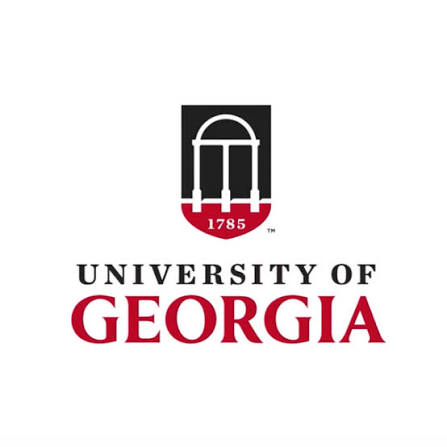
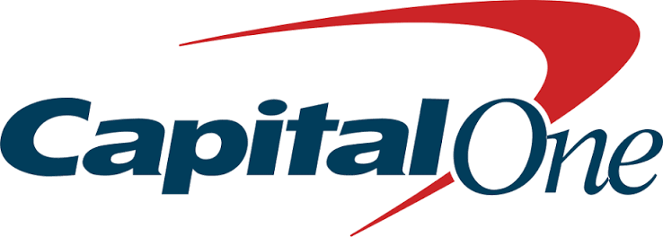
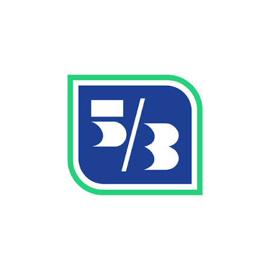
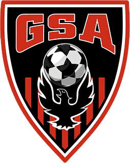

Product Owner
University of Georgia
Aug 2026 — Present
I own digital and operational workflows supporting 204 Peer Learning Assistants, from discovery and prioritization through implementation in SharePoint and Power Automate.
I’m a product manager and builder at the University of Georgia. I’ve worked on AI products, financial data, and internal tools—mostly by finding the part of a workflow that frustrates people and making it simpler.

University of Georgia
I own digital and operational workflows supporting 204 Peer Learning Assistants, from discovery and prioritization through implementation in SharePoint and Power Automate.

Capital One
I led 35+ user interviews and helped launch an AI assistant to 600+ specialists, reducing a funding workflow’s completion time by 40%.

Fifth Third Bank
I turned millions of customer records into reusable feature datasets for segmentation and attrition modeling with Python, SQL, dbt, and Snowflake.

GSA Soccer Association
I used operational data and scheduling tools to coordinate more than 300 officials across fields, matches, and time slots.
Funding specialists had to pull information from several places before deciding what to do next. I spent the summer learning that workflow, finding the biggest delays, and turning the research into a focused AI product.
I interviewed specialists across experience levels and mapped the complete workflow.
I translated repeated pain points into requirements, priorities, and an interface centered on next actions.
I worked with business and technology partners and presented the strategy to senior leadership.
A personalized travel planner with onboarding, trip management, and recommendation flows. I helped shape the experience and build the full-stack product.
View on GitHub ↗A ticketing platform spanning 19 user-facing pages and 15 APIs, including authentication, recommendations, seat selection, and checkout.
View on GitHub ↗I studied computer science because I wanted to understand how products work. I moved toward product management because I kept caring about the questions before the code: who needs this, what are they trying to do, and how will we know it helped?
When I’m away from a laptop, I’m usually following the Premier League, lifting, collecting fragrances, planning a trip, or watching a movie I’ll want to talk about afterward.
I’m looking for early-career product roles where I can stay close to users, understand the technical details, and help ship something useful.
Send me an email ↗